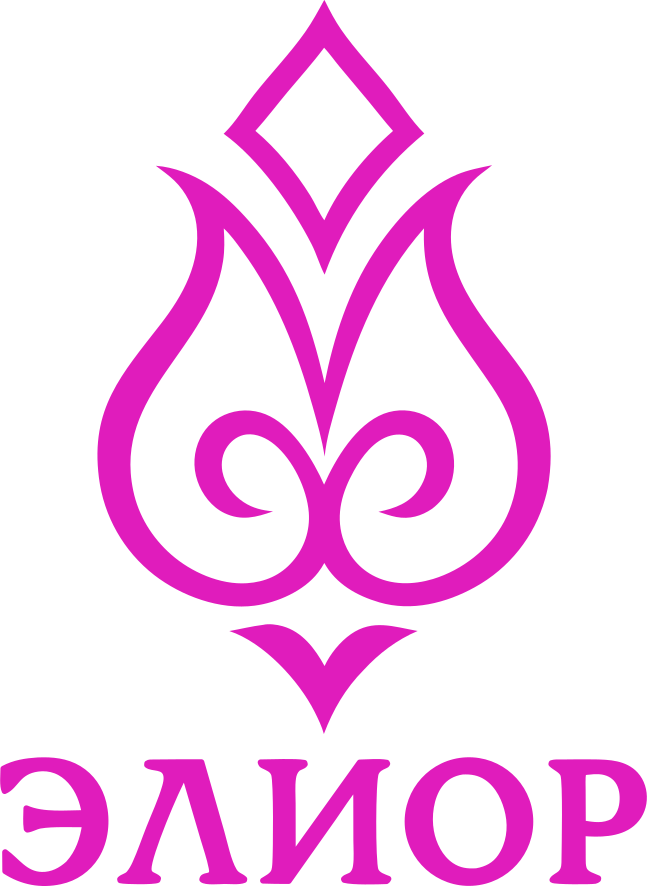

ЭЛИОР - твой символ-якорь, который держит фокус на главном
Личный символ под важную цель: образ и мантра для фокуса. Не предсказание, а точка опоры для ежедневной практики. Первый символ бесплатно, в Telegram.
ЭЛИОР - персональный символ-якорь под твою цель: образ и мантра для фокуса

Знаешь, чего хочешь -
но внимание расплывается?
Личный символ, который держит фокус на главном
Не предсказание судьбы. Точка опоры, к которой возвращаешься каждый день, чтобы не терять себя.
Хватаешься за всё сразу -
и теряешь главное?
Целей много, дни сливаются, а к вечеру не вспомнить, ради чего всё это. Решимость с утра тает к обеду. Дело не в силе воли - внимание просто не на что опереть. Символ-якорь даёт опору: один образ, к которому возвращаешься, и цель снова в фокусе.
- держит внимание на том, что ты выбрал - а не на том, что громче кричит
- возвращает к цели каждый день, без насилия над собой
- работает через возвращение и повторение - растёт вместе с вниманием
Где тебе сейчас не хватает опоры?
Свой символ-якорь - под ту сферу, что забирает больше всего сил. Первый - бесплатно.
💖 Любовь и отношения
Когда растворяешься в другом и теряешь себя - якорь возвращает к собственной опоре.
💰 Изобилие и ресурс
Когда живёшь из нехватки и тревоги о деньгах - якорь держит в ресурсном состоянии.
💼 Дело и реализация
Когда распыляешься на десять задач - якорь держит фокус на деле, которое выбрал.
🌿 Энергия и здоровье
Когда тело на последнем месте - якорь возвращает бережное внимание к себе.
🕊 Внутренняя гармония
Когда вокруг шумно и трясёт - якорь даёт точку, в которую можно вернуться.
🌀 Путь и предназначение
Когда не ясно, куда дальше - якорь держит опору в своём направлении.
Один символ - одна цель - пока цель живёт. Появится новая важная сфера - создашь отдельный якорь под неё.
Это не про «что тебя ждёт».
Это про то, на чём ты держишься.
Гадание обещает заглянуть в будущее и часто пугает, чтобы продать спокойствие. ЭЛИОР так не работает. Символ здесь - якорь: он работает так же, как любая практика - через регулярность, фокус и возвращение. Чем чаще приходишь - тем яснее цель и твёрже опора. Если ищешь волшебную таблетку или знак, после которого «всё само наладится» - это не сюда.
- даёт опору, на которую возвращаешься сам
- держит фокус там, где ты выбрал - каждый день
- раскрывается постепенно, набирая силу вместе с твоим вниманием
Как рождается твой символ
Первый символ остаётся с тобой бесплатно, навсегда. Символы под другие сферы жизни - когда захочешь идти глубже, по прозрачной цене.
Создай свой первый символ
Бесплатно, навсегда. Дальше - только если захочешь идти глубже.